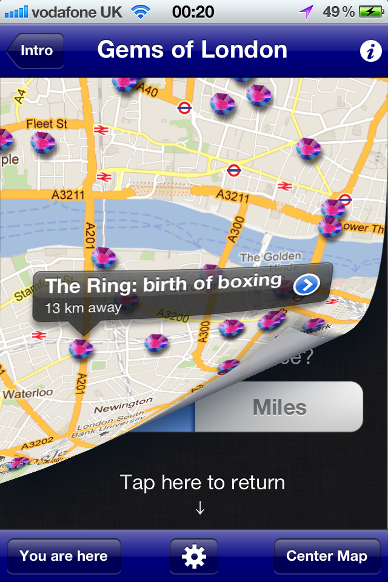

Hidden Gems of London
My new App, Hidden Gems of London, built in collaboration with Victor Keegan, is now live in the App Store!
Our App shows you a London that isn’t in the guide books, highlighting hidden places and features.
My new App, Hidden Gems of London, built in collaboration with Victor Keegan, is now live in the App Store!
Our App shows you a London that isn’t in the guide books, highlighting hidden places and features.